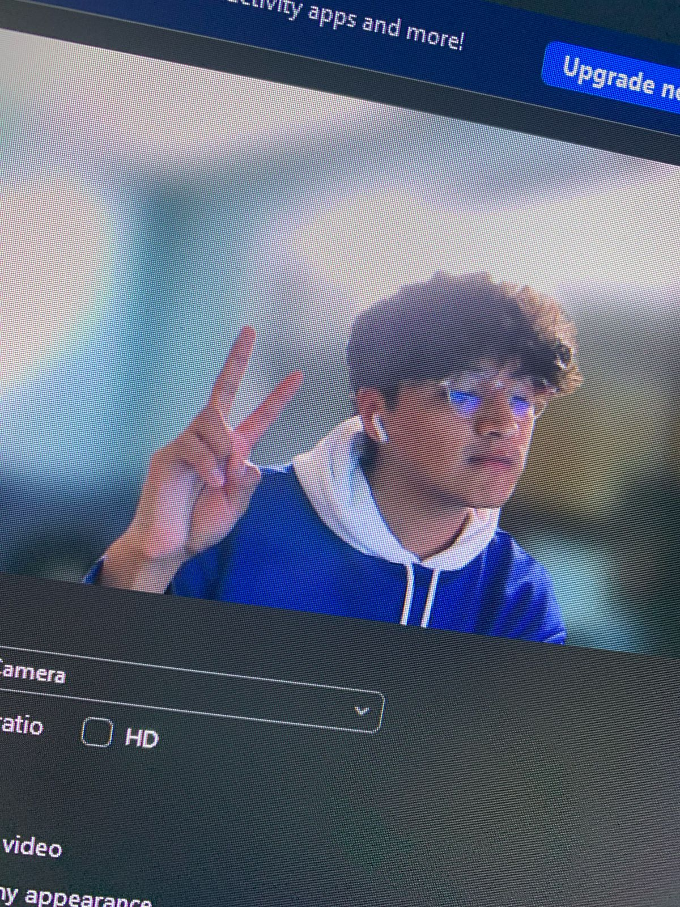

Axel Sara aka "Emit" is a funny, introverted, anxious, and kind guy who was born on the 23rd September of 1999 in the Toluca City.
Since he was little he stood out as a shy but funny kid who liked to play with action figures and construction toys (unfortunately he didn't have legos). In school, he got to use his mother to get high scores, specifically in maths until he discovered subjects like history and that was the beginning of the "Axel basado".
In middle school he became an odd and edgy teenager with some issues at school, it was a weird age for him... he had doubts about everything, but at least he had his PlayStation and at that moment it was he and his PlayStation against the world.
Before middle school ended, he decided to study a technical career in mechatronic
In high school, he developed a huge obsession for soccer and that's when he started to practice some spots. He thought that moment was perfect with his friends, his soccer ball, and lots of junk food, everything looked perfect but no, that was when he started to doubt something about him, something that changed everything.
He knows (of the raise that he grew up with) that wasn't well and he used to hate that... he decided to hide from everyone.
At that moment he was arrogant about his math knowledge, it was because some teachers told him that he was too good at maths, so, he just apply an exam in only a single college, and he failed... but his parents decided to pay for a college.
In that college he became somebody else, in his family's words, he became someone strange, but in his own words, he was himself... and that moment was when he came out as bi xd.
Anyway, he used to struggle with some issues that he thought that was normal, but it weren't and some years later he found out that were depression and anxiety... he also found passion and well feelings when he coded his projects, it was like soul, the Disney movie, when he used to code it was like everything disappear.
TBH...
He likes reading, watching anime, series or any dramatic or romantic movie, he also likes to listen to music but the music genre he used to listen it's a little sad but he enjoys singing those songs like it would be katty parry songs.
Axel Sara
Hobbies
- Read
- Listen music
- Watch anime, series and movies
- Write
- Drawing